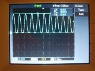
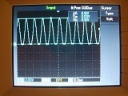

Vous n'êtes pas seuls dans l'Univers !

[
Test d'un détecteur de rayonnement radioactif
]
En juin 2011, la revue d'électronique ELEKTOR avait proposé une méthode permettant de mesurer le rayonnement radioactif ambiant à l'aide d'un certain type de photodiodes.
En novembre de la même année, un montage complet a été publié, associant une platine de détection avec un ensemble d'affichage, piloté par un microcontrôleur.
La platine de détection est présentée et reprise ici, avec un typon légèrement différent, qui remplace les composants passifs traversants par des CMS, c'est-à-dire des composants montés en surface, afin de permettre une réduction de la taille de l'ensemble.
1) Présentation de la carte de détection de rayonnement
La carte est constituée d'une photodiode PIN, et d'un amplificateur construit spécialement pour ce type de capteur.
La photodiode PIN est de type BPW24.
L'amplificateur a pour rôle de présenter une impédance d'entrée élevée et une amplification aux environs de 30 000.
Les siganux qui sont délivrés à la sortie de la platine peuvent avoir une amplitude de 200 millivolt et une durée de 0,5 milliseconde.
Cette caractéristique permet d'attaquer directement un ou plusieurs dispositifs de visualisation, parmis lesquels des hauts-parleurs, des compteurs ou encore des oscilloscopes.
La datasheet de la photodiode BPW24R :
 http://www.vishay.com/doc?81520
http://www.vishay.com/doc?81520

|
{kind=link}
{kind=link}
2) Protocole expérimental
Pour les mesures, il a été jugé pertinent d'enregistrer le signal en sortie du détecteur de rayonnement au cours du temps, sur une période de temps de 30 minutes environs.
Un ordinateur, équipé d'une carte son disposant d'une entrée ligne et sur lequel a été installé un logiciel d'enregistrement audio, a été utilisé.
Le logiciel d'enregistrement audio dont les captures d'écrans suivantes ont été tirées est « AUDACITY ».
Pour avoir plus d'informations sur ce logiciel et pour le télécharger, ouvrez ce lien Internet :
http://www.audacity.sourceforge.net/?lang=fr

Remarque : Si vous disposez d'un ordinateur, mais que celui-ci n'est pas équipé d'une entrée ligne, vous pouvez utiliser son entrée microphone, qui est couramment répandue.
Veillez cependant à régler le niveau d'enregistrement à un niveau faible, car ce type d'entrée est adaptée à des niveaux de signaux électriques moindres que ceux que l'on retrouve pour une entrée ligne !
Il est également possible d'utiliser un oscilloscope à mémoire, en réglant la base de temps sur une valeur de fréquence faible, mais la plupart des modèles d'oscilloscopes ne permet pas d'effectuer des enregistrements de durée de 30 minutes ou plus.
Pour vérifier le bon fonctionnement du détecteur de rayonnement, toujours à l'aide d'un oscilloscope à mémoire, une méthode possible consiste à effetuer une acquisition en mode « Single », et à régler le déclenchement sur front montant, de façon à visualiser la forme des implusions générées en sortie du montage.
Comme le montage utilise une photodiode, qui est un composant qui réagit à la lumière, il faut prévoir un cache afin de limiter le plus possible la quantité de lumière qui atteint la face sensible.
En effet, l'utilisation de la photodiode en tant que détecteur de rayonnement radioactif n'est possible que si celle-ci ne réagit pas avec la lumière.
Cela diffère de l'usage habituel de ce type de composants.
La solution qui a été appliquée ici est le recours à une boîte en carton antistatique, pour rendre le montage le plus insensible possible à la lumière.
Ces boîtes sont celles qui servent à protéger les composants électroniques qui ne sont pas utilisées dans des montages.
Afin d'assurer un blindage électromagnétique en plus d'une limitation des effets de la lumière, il est également possible d'utiliser une boîte en métal.
Dans ce cas, la connexion de la masse du montage devra être reliée électriquement à la partie métallique de la boîte.
Il faudra prévoir le passage des câble d'alimentation et du signal de sortie de la platine.
L'alimentation, qui doit être la plus exempte de parasites possible, est assurée dans le cas présent par une pile rechargable de 9V.
Ceci permet de limiter la perturbation du montage, ce qui influencerait sur le signal de sortie, et donc sur les résultats des mesures.
{kind=link}
{kind=link}
{kind=link}
 

{kind=link}
{kind=link}
Le signal de sortie au repos est d'environ 2,5 Volt.
{kind=link}
{kind=link}
{kind=link}
{kind=link}
Les particules naturellement radioactives qui sont présentes dans l'environnement permettent de vérifier le bon fonctionnement du montage.
Lors des manipulations, il a suffi d'attendre moins d'une demi-heure pour qu'une particule soit détectée.
Les particules de type « alpha » ne sont que très peu détectées, car la protection en plastique de la photodiode en arrête une grande partie.
Ce sont les particules de type « bêta » et « gamma », plus énergétiques, qui réagissent avec la partie sensible de la photodiode.
{kind=link}
{kind=link}
Les formes des impulsions observées à l'aide d'un oscilloscope sont évidemment les mêmes sur les enregistrements effectués avec une carte son, un ordinateur et un logiciel adapté.
{kind=link}
{kind=link}
{kind=link}
3) Mesures
Pourquoi ne pas coupler la sortie du détecteur de rayonnement radioactif à la carte de commandes du cube à LED ?
3-1) Dans une cave au sol bétonné
{kind=link}
Remarque : Les réglages de la carte son de l'ordinateur qui a servi à effectuer ces relevés n'ont pas été changés.
Le fait qu'il y ait plus de bruit sur le premier relevé que sur le deuxième et sur le troisième peut s'expliquer par un couplage parasite plus important avec le réseau de distribution électrique.
3-2) Dans une cave en terre battue, au sol granitique
Le granite est une roche qui est présente dans certains sols.
Cette roche a la particularité de dégager un gaz, nommé « Radon ».
Ce dernier est naturellement radioactif.
{kind=link}
3-3) Dans une cave en terre battue, au sol non granitique
{kind=link}
4) Sujets associés
Au cours de cet article, le cube à LED a été évoqué, celui-ci fait appel à un microcontrôleur de type PIC18F2610.
Commentaires (0)
Ajouter un commentaire